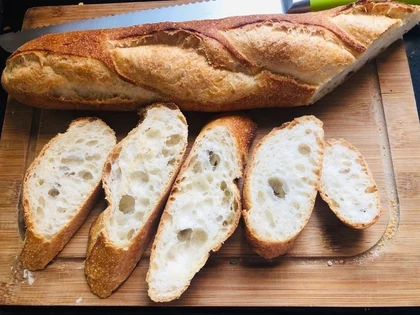
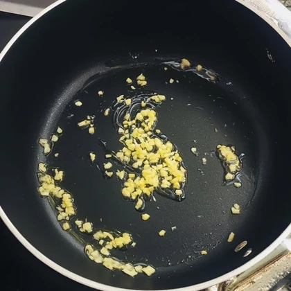
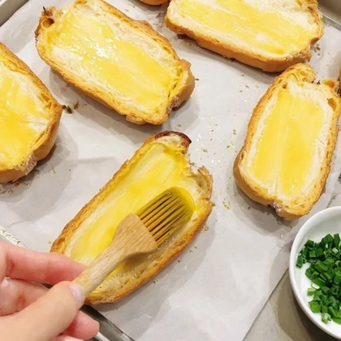

Reference text
Slice the baguette evenly on a wooden board.

Reference text
Brush each cut surface evenly with garlic butter.
High-quality interleaved data curated from a million-scale pool.
Wikivoyage · Wikitravel
Coarse-to-fine diagnosis with expert models.
Generate the full interleaved response.
Make garlic bread step by step, using two images.
Melt butter gently, then stir in finely minced garlic.

Brush baguette slices with garlic butter on a tray.

Fix real context. Generate only the next image.
Slice the baguette evenly on a wooden board.

Brush each cut surface evenly with garlic butter.
| Metric | Expert model / evaluator |
|---|---|
| Holistic | |
| Text Richness | LLM · Gemma4 |
| Text Logicality | LLM · Gemma4 |
| Image Aesthetic | IQA · RALI |
| Image Diversity | DINOv3 |
| Quantity Compliance | Exact image count |
| Fine-grained | |
| Context Fidelity | VLM · Gemma4 |
| Subject Consistency† | DINOv3 |
† Subject Consistency is evaluated on Tutorial and Story.
Model strengths, the open–closed gap, and the effects of SFT and RL.
Results could not be loaded. Please refresh to try again.
Complementary dimensions, human agreement, and consistent evaluator rankings.
max |ρ| = 0.42
Seven evaluation dimensions
Different metrics capture different strengths.
Limited redundancy in sample-level correlations, averaged over five models.
83.3%
Average agreement with expert judgments
Automatic scores align with human preferences.
750 expert pairwise comparisons across five subjective metrics: TR, TL, ID, CF, and SC.
ρ > 0.90
Gemma4 vs. Qwen3.6-35B-A3B
Model rankings stay consistent across evaluators.
Eight model variants. Rank correlations: TR 0.905 · TL 0.929 · CF 0.976.